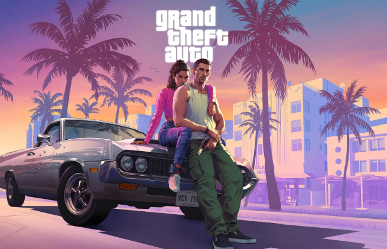

Исполнительный директор Take-Two Interactive Штраус Зельник пообщался с прессой о Grand Theft Auto VI — переносе игры на 2026 год, ценообразовании и не только.
Согласно свежему отчёту Take-Two, полноценная разработка GTA 6 началась в 2020 году после успеха Red Dead Redemption 2. Последняя вышла в 2018 году. К моменту релиза период разработки GTA 6 составит как минимум восемь лет. Производственный бюджет оценивается в более чем 1 млрд долларов. Это, как подмечают в IGN, делает новую Grand Theft Auto самой дорогой видеоигрой в истории.
С GTA 6 команда Rockstar стремится к совершенству, и ближе к релизу стало понятно, что игре нужна дополнительная полировка. Это обычное дело с такими амбициозными проектами. В издательстве также хотели, чтобы реализация творческого видения разработчиков не имела ограничений со стороны. Поэтому Зельник лично поддержал такой подход.
Take-Two «не позволит недавним шагам конкурентов повлиять на своё решение» по поводу итоговой цены. Сама она придерживается подхода, при котором игроки получают больше, чем они платят.
GTA 6 выходит 26 мая 2026 года на PS5 и Xbox Series.
